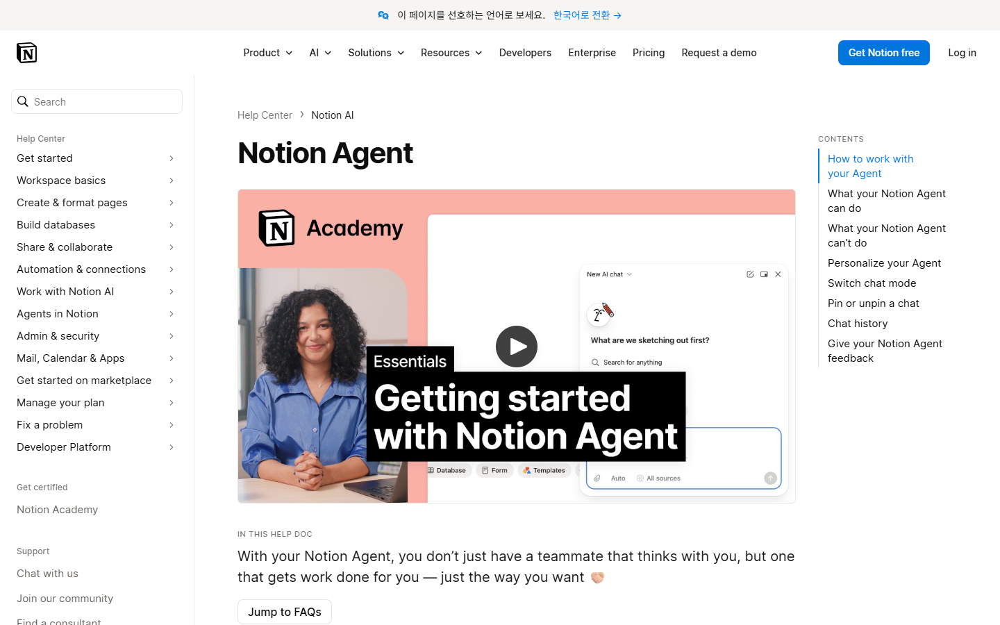
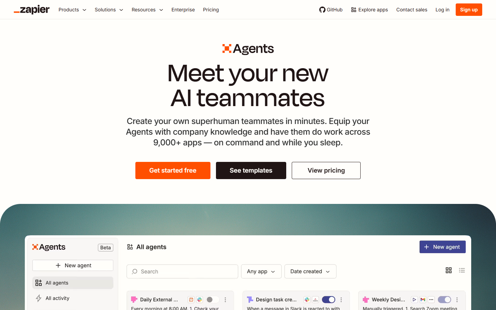

대화에서 작업으로
사용자는 채팅에서 반복 작업을 만들고, 변화가 생기면 알림을 받을 수 있다.
FlowMe에 주는 신호: 알림 자체는 차별점이 아니다.AI는 콘텐츠에서 계획 초안을 만들 수 있다. FlowMe가 소유해야 할 것은 초안 자체가 아니라, 출처가 있는 계획이 여러 사람에게 재사용되고 실제 사용 이력으로 개선되는 구조다.
비전을 처음부터 전부 만들지 않는다. URL을 넣고, 기존 Flow를 찾고, 개인 상황에 맞게 고치고, 기존 도구에서 실행하는 작은 경로부터 쌓는다.
FlowMe가 ‘AI가 계획을 만들어준다’거나 ‘캘린더에 넣어준다’는 기능만 제공하면 기존 AI·노트·자동화 제품과 구분되기 어렵다.
사용자는 채팅에서 반복 작업을 만들고, 변화가 생기면 알림을 받을 수 있다.
FlowMe에 주는 신호: 알림 자체는 차별점이 아니다.
Google Calendar와 Samsung Calendar를 포함한 여러 캘린더의 일정을 만들고 찾고 수정한다.
FlowMe에 주는 신호: 일정 입력도 기본 기능이 된다.
워크스페이스와 연결 앱을 읽어 여러 단계의 작업을 수행하고, 일정 조정과 시간 배치도 돕는다.
FlowMe에 주는 신호: 문서 안의 AI 실행도 빠르게 확장된다.
공식 페이지 기준 9,000개 이상의 앱과 기업 데이터를 연결해 에이전트가 작업하게 한다.
FlowMe에 주는 신호: 연동 수로 경쟁하지 않는다.위 내용은 각 회사가 공개한 기능을 요약한 것이다. 시장 점유율이나 FlowMe 수요를 증명하는 자료는 아니다.
AI가 지금 콘텐츠를 완벽하게 이해하지 못하는 것은 진입 기회다. 하지만 장기 전략은 AI가 더 좋아져도 남아야 한다.
Gemini 공식 도움말도 응답이 부정확하거나 오래된 정보를 포함할 수 있으므로 출처를 확인하라고 안내한다. 이는 FlowMe가 모델보다 출처·확인일·버전을 소유해야 한다는 근거다.
같은 Flow를 여러 사용자와 도구가 다시 쓰려면, 무엇을 해야 하는지뿐 아니라 어디서 왔고 어떻게 달라졌고 실제로 어떻게 사용됐는지가 남아야 한다.
내부 근거: Flow 데이터 구조 검토 보드, 출처·버전·신뢰 기록 보고서.
콘텐츠 제공자, 사용자, FlowMe가 한 번 만든 계획을 서로 다른 방식으로 개선할 때 데이터가 쌓인다. 단순 조회수나 생성 횟수만으로는 이 순환이 생기지 않는다.
플랫폼 기능을 먼저 만드는 것이 아니라, 한 Flow를 사용할수록 세 참여자의 결과가 동시에 좋아지는 구조를 만든다.
FlowMe가 이사·육아·학습 전문 앱이 될 필요는 없다. 다만 아무 상황도 선택하지 않은 수평 플랫폼은 초기 콘텐츠와 사용자를 모으기 어렵다.
출처, 실행 항목, 버전, 개인 수정, 완료 상태, 내보내기 규칙은 모든 영역에서 같다. 분야마다 별도 앱과 데이터 구조를 만들지 않는다.
하나의 구체적 상황, 출처 묶음, 제공자 채널을 선택해 좋은 Flow를 공급한다. 반응이 확인되면 같은 실행 구조를 다른 영역에 적용한다.
기능을 한꺼번에 열지 않는다. 이전 단계에서 실제 사용 근거가 생겨야 다음 단계의 데이터와 책임을 감당할 수 있다.
URL을 찾고, 출처가 있는 실행 계획을 만들고, 기존 도구로 내보낸다.
다음 조건: 저장·내보내기 행동같은 URL의 기존 Flow를 먼저 찾고, 원본을 보존한 개인 버전을 만든다.
다음 조건: 재방문·수정·재사용완료·중단·건너뜀·보류·기록이 실행 항목에 누적된다.
다음 조건: 반복 실행과 유용한 신호동의한 집계 신호가 다음 Flow 버전과 제공자 피드백으로 이어진다.
다음 조건: 공급·업데이트 참여사용자가 허용한 범위에서 여러 Flow의 다음 행동과 충돌을 조정한다.
진입 조건: 신뢰·반복 사용·사용자 통제현재 저장소는 콘텐츠와 실행을 연결하는 화면, 내보내기 방식, 출처 기록, 데이터 구조를 갖추고 있다. 실제 사용자가 반복해서 쓴다는 증거는 아직 없다.
추천: 승인. AI는 교체 가능한 초안 엔진으로 둔다.
보류하면 모델 성능과 캘린더 기능 경쟁으로 제품 범위가 다시 넓어진다.
추천: 승인. 개인 데이터는 비공개를 기본으로 한다.
집계 신호는 사용자 동의와 비식별 조건을 갖춘 뒤에만 플랫폼 개선에 쓴다.
추천: 승인. 이전 단계의 실제 사용 근거가 다음 단계의 진입 조건이다.
특정 분야 전용 제품, 창작자 마켓, 범용 자동 실행은 순서를 건너뛰지 않는다.
근거 범위: 외부 기능은 2026-07-12 각 회사 공식 자료에서 확인했다. FlowMe 관련 수치는 저장소의 구현·전략 문서 기준이며, 실제 사용자 검증이나 시장 성과로 해석하지 않는다.